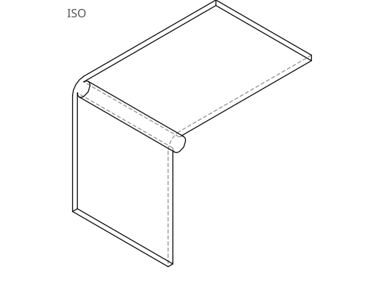
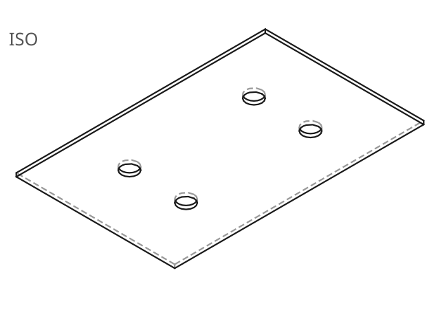
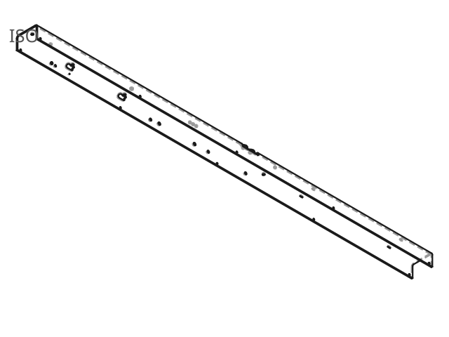
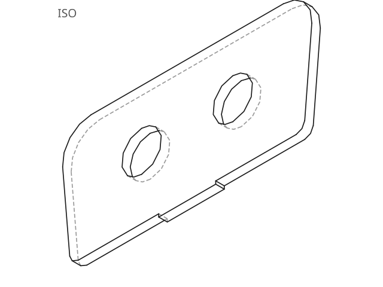
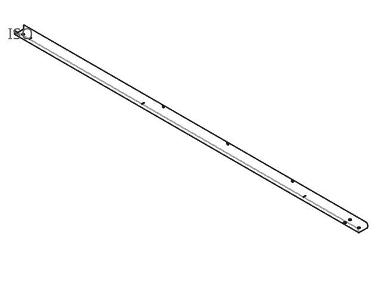

The 3D corpus
& unfold viewer.
Every STEP file is run through the full pipeline — parsed, each solid classified as plate, profile or other, and, where the geometry is developable sheet metal, unfolded into a flat blank. Open any part to rotate the model and compare the folded CAD solid against its flat pattern.
How to read this corpus
The solid as modelled in CAD — rendered as the light-blue 3D mesh.
The flat blank the engine computes by walking the bend graph — the terracotta mesh.
Each cylindrical patch joining two flanges, with angle, inner radius and fold direction.
synthetic parts are generated from OCP primitives; real parts are production / NIST CAD. See corpus.json.
Browse the corpus

1 bend
flat panel
2 bends
flat panel flat panel
flat panel
 flat panel
flat panel

2 bends